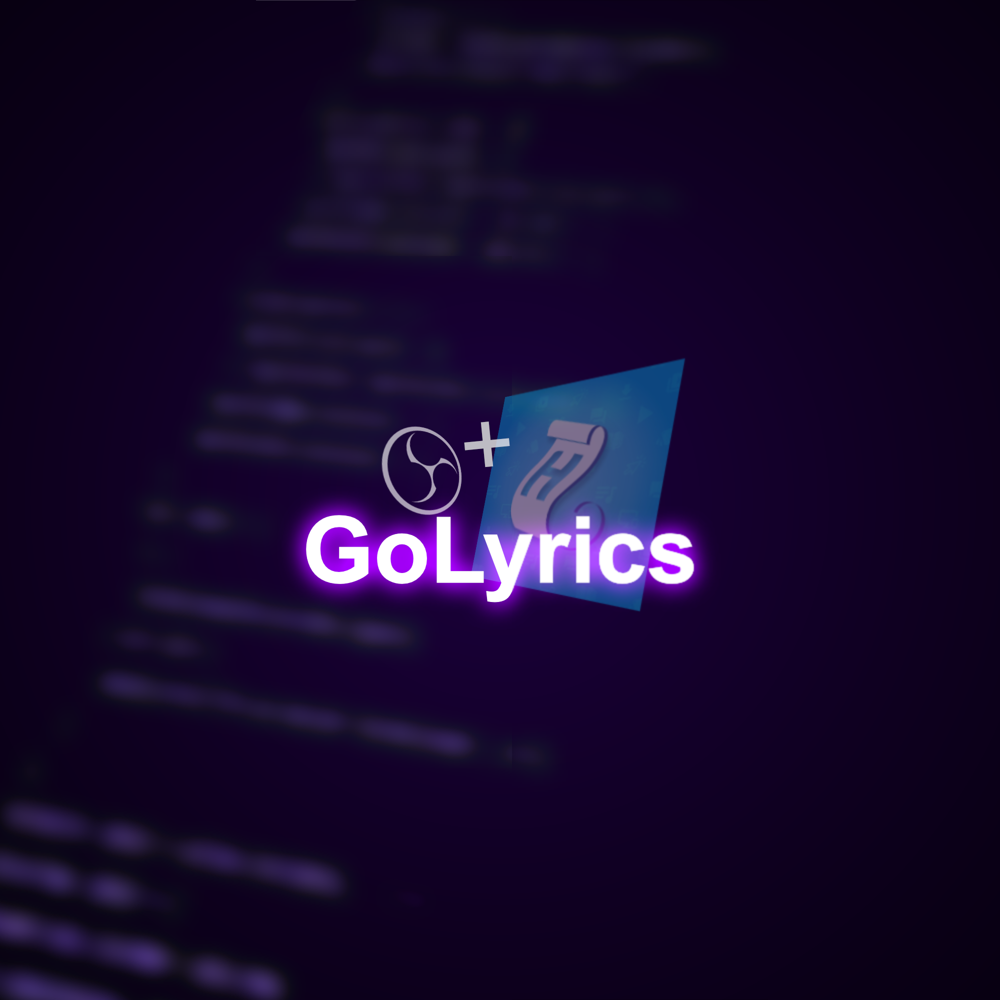
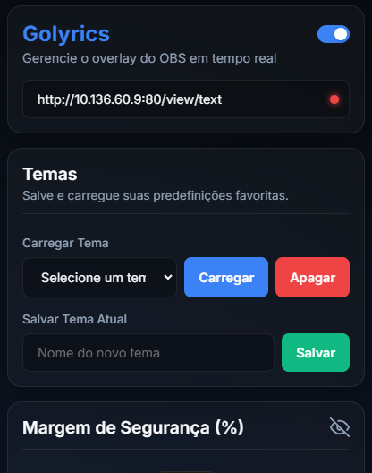
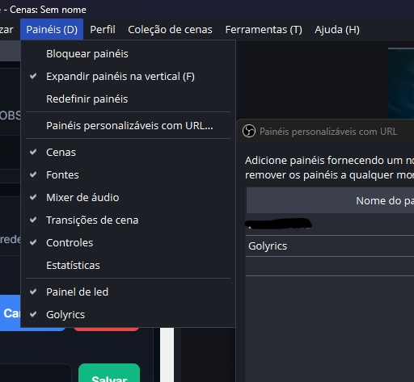
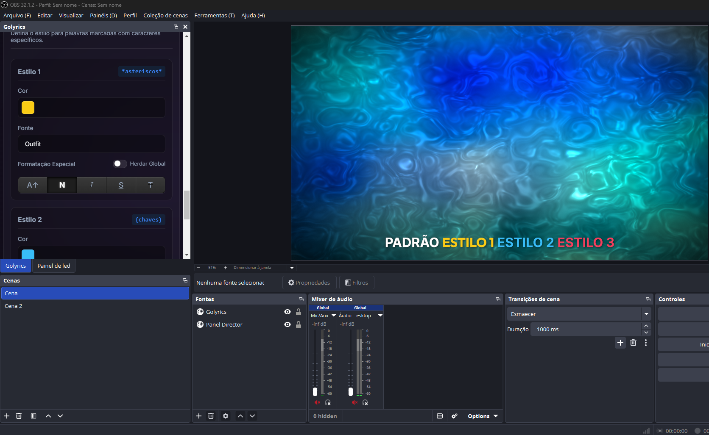
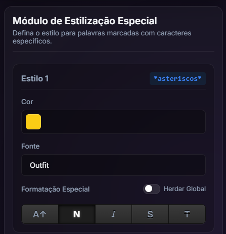
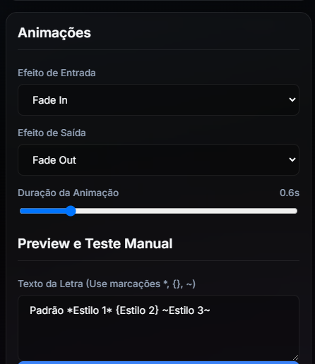
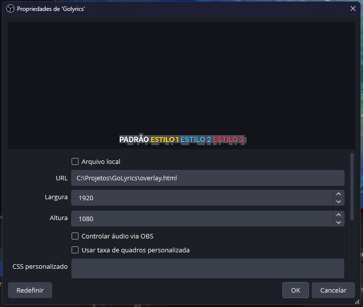

O GoLyrics é uma solução de overlay para transmissões ao vivo e apresentações no OBS Studio. Ele recebe as letras exibidas no Holyrics em tempo real e as renderiza na tela com animações, estilos tipográficos personalizados e suporte a marcações especiais de formatação — tudo controlado por um painel intuitivo.
Eleve o nível da sua transmissão com o GoLyrics!


Vá em Painéis > Painéis personalizados com URL e adicione o local do arquivo control.html
Vá em adicionar fontes > Navegador dê um nome à fonte e cole o caminho do arquivo overlay.html
Cole o link gerado pelo pluggin do holyrics e pronto, é só usar! Como achar o link do pluggin holyrics?
https://0victor73.github.io/Golyrics/control.html
https://0victor73.github.io/Golyrics/overlay.html



